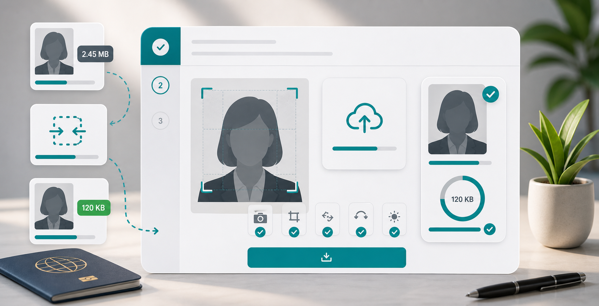

Passport photos
Compress passport photo online for upload forms.

Passport-style photos are often needed for applications, school portals, job forms, ID systems, and profile uploads. These websites commonly set strict file size limits, but the photo still needs to show the face clearly. That balance matters. A file that is small but blurry can be rejected or look unprofessional.
Start with the crop. A passport-style photo should keep the face centered, with enough space around the head and shoulders. Remove unnecessary background, but do not crop so tightly that the image feels cut off. If the form gives exact dimensions, follow them before compression.
Use JPG unless the portal asks for another format. JPG is widely accepted and works well for face photos. Set the width according to the form requirement. If there is no dimension rule, a moderate size such as 600 to 1000 pixels wide is often enough for online uploads. Avoid sending a full camera photo unless the site specifically asks for high resolution.
Compress gently at first. Try 65 to 75 percent quality. Look at the eyes, hairline, background, and edges of the face. If you see blocky patches or strange color changes, raise quality or reduce dimensions instead. For strict limits like 50KB, you may need a smaller crop and lower quality, but always check the face before uploading.
Use a simple filename such as passport-photo.jpg. Some older forms are sensitive to spaces, symbols, or very long names. Keep the original photo saved separately so you can export a different size if another portal has different requirements.
Use the CompressPixel compressor to resize and compress the image locally in your browser. For strict limits, read compress image to 50KB and compress image under 100KB. For job portals, see compress photo for job application.
Lighting matters before compression. A dark or noisy photo is harder to compress cleanly because the image contains lots of messy detail. Use a clear, evenly lit photo with a simple background when possible. A clean source image usually compresses better and looks more professional at small file sizes.
Be careful with filters, beauty effects, and heavy editing. Many application systems expect a natural passport-style photo. Over-edited images may look less trustworthy, and compression can make editing artifacts more obvious. Keep the image simple: clear face, plain background, good crop, and moderate quality.
If a portal gives a file size and dimension requirement, both matter. For example, an image can be under the KB limit but still too wide, or it can match the dimensions but exceed the file size. Work in this order: crop, resize to required dimensions, compress to the required size, then upload.
If the site rejects the file, do not panic. Check the extension first. Some portals say "photo" but only accept JPG. Then check size, dimensions, and filename. A simple lowercase filename without spaces can avoid problems on older systems.
For important applications, make one final visual check before submitting. Confirm that the face is not stretched, the background is not distracting, and the image has not become too dark after compression. If the compressed version looks worse than expected, go back to the original and export again with slightly better quality or a smaller crop. That final check can prevent a rejected upload and save you from repeating the whole form later.
Sources and further reading
- web.dev image performance explains practical file-size factors such as dimensions and formats.
- Google Image SEO best practices is useful for public profile images and website photos.